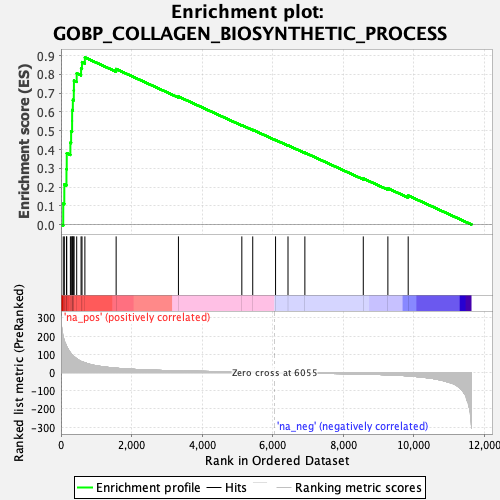
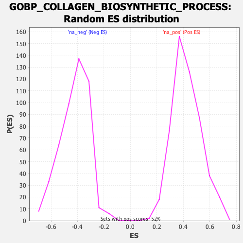

| | | Dataset | DE_genes |
| Phenotype | NoPhenotypeAvailable |
| Upregulated in class | na_pos |
| GeneSet | GOBP_COLLAGEN_BIOSYNTHETIC_PROCESS |
| Enrichment Score (ES) | 0.8905498 |
| Normalized Enrichment Score (NES) | 2.0927362 |
| Nominal p-value | 0.0 |
| FDR q-value | 0.0 |
| FWER p-Value | 0.0 |
Table: GSEA Results Summary

Fig 1: Enrichment plot: GOBP_COLLAGEN_BIOSYNTHETIC_PROCESS
Profile of the Running ES Score & Positions of GeneSet Members on the Rank Ordered List
| SYMBOL | RANK IN GENE LIST | RANK METRIC SCORE | RUNNING ES | CORE ENRICHMENT | | 1 | TGFB3 | 64 | 193.920 | 0.1116 | Yes |
| 2 | EMILIN1 | 94 | 172.851 | 0.2135 | Yes |
| 3 | RUNX1 | 155 | 143.617 | 0.2951 | Yes |
| 4 | RCN3 | 163 | 141.132 | 0.3798 | Yes |
| 5 | ITGA2 | 266 | 107.800 | 0.4361 | Yes |
| 6 | F2R | 287 | 102.747 | 0.4965 | Yes |
| 7 | TGFB1 | 315 | 95.879 | 0.5520 | Yes |
| 8 | P3H3 | 316 | 95.748 | 0.6099 | Yes |
| 9 | SERPINH1 | 336 | 92.449 | 0.6641 | Yes |
| 10 | COL5A1 | 363 | 87.588 | 0.7148 | Yes |
| 11 | CYGB | 367 | 86.731 | 0.7669 | Yes |
| 12 | PDGFRB | 445 | 75.193 | 0.8057 | Yes |
| 13 | ERRFI1 | 569 | 60.771 | 0.8318 | Yes |
| 14 | RGCC | 595 | 59.119 | 0.8654 | Yes |
| 15 | COL1A1 | 677 | 53.261 | 0.8905 | Yes |
| 16 | VIM | 1563 | 23.690 | 0.8286 | No |
| 17 | P3H4 | 3329 | 8.832 | 0.6820 | No |
| 18 | UCN | 5126 | 3.598 | 0.5295 | No |
| 19 | TRAM2 | 5435 | 3.059 | 0.5048 | No |
| 20 | CREB3L1 | 6082 | -2.226 | 0.4505 | No |
| 21 | IL6 | 6435 | -2.775 | 0.4219 | No |
| 22 | SUCO | 6913 | -3.578 | 0.3830 | No |
| 23 | CCN2 | 8569 | -8.301 | 0.2455 | No |
| 24 | SERPINB7 | 9266 | -12.374 | 0.1930 | No |
| 25 | PPARD | 9842 | -18.236 | 0.1545 | No |
Table: GSEA details [plain text format]

Fig 2: GOBP_COLLAGEN_BIOSYNTHETIC_PROCESS: Random ES distribution
Gene set null distribution of ES for GOBP_COLLAGEN_BIOSYNTHETIC_PROCESS